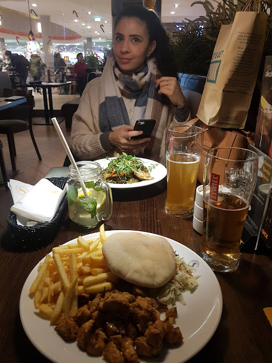

Nossa história
Provavelmente você sabe o quanto eu me preocupo contigo e o quanto que eu gostaria de estar alí com você passando o dia dos namorados, afinal de contas este seria o primeiro deles. Já que isso não é possível vamos tentar matar a saudade por uma das maiores invenções da humanidade. A INTERNET.
Explore House
Lá pelas primeira semanas de Intercâmbio, aquela loucura toda de acomodação e divisão de casa com várias pessoas, eu ví alguém especial na cozinha da casa. Era você!. Você toda perdida, recém chegada, e eu também bem deslocado de tudo. A difícil adaptação e a vontade de sair para conversar me levou a te fazer um convite para dar uma volta. O resto é história...
Esse foi o primeiro de muitos lugares que a gente saiu para jantar: Hook & Ladder, naquela noite chuvosa e fria de Limerick.
Companhia
Desde o começo, a gente foi bastante apegado um ao outro e sempre fizemos companhia um ao outro. Nos momentos mais difíceis você estava lá ao meu lado e sei que tivemos vários. Eu lembro de tudo que eu sofri na minha casa e no trabalho e você sempre me apoiava com sábias palavras e me dava um conforto. Tenho muito a agradecer por tudo isso.
Jantares
Uma coisa eu posso dizer com toda a certeza do mundo, você é uma ótima cozinheira e foi maravilhoso poder sair para jantar em diversos restaurantes.
Claro que sempre acompanhado de um bom vinho escolhido a dedo no Tesco. Era muito bom poder ajudar na cozinha e até mesmo lavar a louça.
E aliás, eu aprendi muito contigo nesta parte de cozinhar. Inclusive até me sinto mais confiante para preparar alguma coisa. Mas não espere nada de bom por enquanto, apenas algo com bastante esforço. Na sequência seguem alguns momentos de puro prazer, provando dos melhores pratos que poderíamos ter provado.
Esse "Hamburgão" comemos em Cork, e se não fosse tu ter levado dinheiro em espécie, provavelmente teríamos que ter lavado a louça para pagar a conta 🤑.

Os jantares na Lana não poderíam dicar de fora dessa lista, e eu nem tô contando com o Shake Dog e também os lanches fast food que comemos por aí na Irlanda.
Este prato que pegamos lá no Shopping em Cracóvia foi uma loteria né, o meu até que estava bom, mas sua batatinha frita ou espécie de batata frita tinha mais óleo do que na panela.
Mas aqui temos a cereja do bolo, tanto é que fomos duas vezes no mesmo lugar. Até hoje procuro o Balsâmico para comprar.
Faltam fotos dos outros lugares que fomos, pois foram tantas experiências gastronômicas que a página ficaria gigante. Mas o que importa é o que fica na memória.
Viagens
Não poderia ter sido melhor, viajar em boa companhia sempre é uma ótima experiência. Você me fez aproveitar mais ainda os locais que fomos.
Nosso passeio para Espanha foi muito bom, e a gente conseguiu aproveitar o máximo que podíamos, mesmo errando a estação do trem 🤪.

Esse mar de Marselha foi algo tão incrível de ver. Eu jamais imaginei em que pudesse ser tão bonito. Obrigado por aceitar fazer o passeio de barco.
A fábrica da cerveja mais popular da Irlanda precisava ser visitada, e o que marcou mais, foi que não devolvemos os copinhos 🍻.
Não pegamos a neve na Polônia, mas conhecemos os lugares mais legais de todos. Inclusive marcos históricos que mudaram a história da humanidade. Obrigado por dividir esses momentos comigo.
Então é isso! Espero que você tenha gostado deste humilde presente e pode ter certeza que eu fiz cada parte dele com muito carinho. Sei que poderia ter sido algo melhor, mas foi o que eu consegui dentro das limitações que possuo. Eu sempre costumo dizer que "O esforço vence o talento, se o talento não se esforçar", e foi isso que eu fiz. Me esforcei bastante.
Amo você, feliz dia dos namorados!